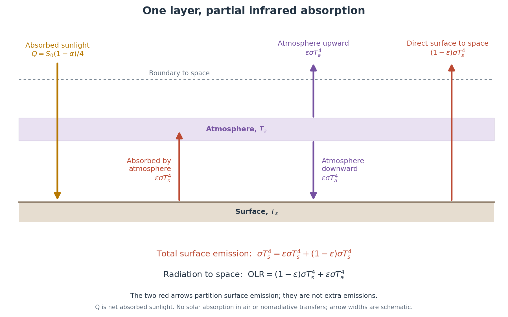

import numpy as np
import matplotlib.pyplot as plt
S0 = 1361.0 # W m^-2
alpha = 0.30
sigma = 5.670374419e-8 # W m^-2 K^-4
Q = S0 * (1 - alpha) / 4
DAY = 86400.0 # seconds
YEAR = 365.0 * DAY # fixed-length year for this experiment
# Illustrative effective heat capacities per unit area, not fitted to Earth.
Cs = 1.0e8 # J m^-2 K^-1
Ca = 1.0e7 # J m^-2 K^-1
# Recover the fitted initial equilibrium from notebook 1a.
epsilon_old = 2 * (1 - Q / (sigma * 288.0**4))
epsilon_new = 0.82 # prescribed absorption experiment, NOT a CO2 concentration
def equilibrium(epsilon):
"""Equilibrium Ts and Ta (K); requires 0 < epsilon <= 1."""
if not 0 < epsilon <= 1:
raise ValueError('Atmospheric equilibrium requires 0 < epsilon <= 1')
Ts = (Q / (sigma * (1 - epsilon / 2)))**0.25
return np.array([Ts, Ts / 2**0.25])
def budgets(temperature, epsilon):
"""Net surface/air heating, OLR, and planetary imbalance, all W m^-2.
temperature can be [Ts, Ta] or an array with shape (time, 2).
"""
temperature = np.asarray(temperature)
Ts, Ta = temperature[..., 0], temperature[..., 1]
surface_emission = sigma * Ts**4
air_emission = epsilon * sigma * Ta**4 # in EACH direction
Rs = Q + air_emission - surface_emission
Ra = epsilon * surface_emission - 2 * air_emission
OLR = (1 - epsilon) * surface_emission + air_emission
N = Q - OLR
return Rs, Ra, OLR, N
initial = equilibrium(epsilon_old)
target = equilibrium(epsilon_new)
print(f'Absorption step: {epsilon_old:.4f} → {epsilon_new:.4f}')
print(f'Initial equilibrium: Ts = {initial[0]:.2f} K; Ta = {initial[1]:.2f} K')EBM 1b — Adjustment over time
Download this notebook (.ipynb)
Upload it to LEAP and open it with a Python kernel. See Week 2 materials for instructions.
In-class activity · work with a partner · follows notebook 1a
Learning objectives
- Distinguish an immediate change in radiation from the temperature response that follows.
- Use energy imbalances to explain how two reservoirs warm.
- Test how surface heat capacity changes adjustment without changing equilibrium.
The integration and plotting code are supplied. Your work is to state what you expect and why, run the experiments, and explain the results in the response cells. Read each question before running the cells below it. Save your notebook with plots and your own written responses. Finish Section 5 at home before submission if we do not reach it in class.
This notebook runs independently of 1a and needs only NumPy and Matplotlib. Run cells in order. It uses the same model and constants as 1a.
1. From equilibrium to rates of change
Keep the surface black in the longwave, the atmosphere transparent to sunlight, and albedo fixed. There is still no convection, evaporation, or longwave reflection. The budgets are
\[C_s\frac{dT_s}{dt}=Q+\epsilon\sigma T_a^4-\sigma T_s^4\equiv R_s,\] \[C_a\frac{dT_a}{dt}=\epsilon\sigma T_s^4-2\epsilon\sigma T_a^4\equiv R_a.\]
Each \(R\) is a net heating flux (W m\(^{-2}\)); divide by its reservoir’s heat capacity per area (J m\(^{-2}\) K\(^{-1}\)) to obtain K s\(^{-1}\). Thus flux imbalance changes stored energy, which changes temperature—the same logic as water accumulation changing bucket level.
For the combined system,
\[\mathrm{OLR}=(1-\epsilon)\sigma T_s^4+\epsilon\sigma T_a^4,\qquad N=Q-\mathrm{OLR}=R_s+R_a.\]
Positive \(N\) means the planet is gaining energy. Unlike equilibrium, OLR need not equal \(Q\) during adjustment.
Before running: what do you expect?
Start from the 288 K equilibrium found in notebook 1a. At \(t=0\), increase \(\epsilon\) from its fitted value (about 0.779) to 0.82 and hold it there. Do you expect the surface to warm or cool? Explain your reasoning before running the model.
Your expectation and reasoning:
Write here.
# Store the old and immediate post-step budgets for later comparisons.
# Both use the same initial temperatures; only absorption changes.
before = budgets(initial, epsilon_old)
after = budgets(initial, epsilon_new)2. Follow the adjustment
This is the same forward Euler method as the bucket model in Lab 0d, now applied to two coupled reservoirs. The supplied routine takes small forward steps:
\[T_s(t+\Delta t)=T_s(t)+\frac{R_s(t)}{C_s}\Delta t,\qquad T_a(t+\Delta t)=T_a(t)+\frac{R_a(t)}{C_a}\Delta t.\]
Both budgets use the same old pair of temperatures before either is updated. We use a one-day time step. Before class, this setup was checked against half-day steps; the largest temperature difference was less than 0.001 K. Forward Euler is an approximation, not an exact solution; a large step can give misleading or unstable results.
We use illustrative \(C_s\) and \(C_a\) to explore the roles of heat storage, without choosing a particular ocean depth. The simulated times in years depend on these choices and are not a prediction of Earth’s warming timeline. The absorption step occurs before the first update.
def integrate(initial_temperature, epsilon, Cs, Ca, years=60, dt_days=1.0):
"""Forward Euler after a step to a constant epsilon; time returned in seconds."""
if Cs <= 0 or Ca <= 0 or years <= 0 or dt_days <= 0:
raise ValueError('Heat capacities, duration, and time step must be positive')
if not 0 <= epsilon <= 1:
raise ValueError('epsilon must lie between 0 and 1')
initial_temperature = np.asarray(initial_temperature, dtype=float)
if initial_temperature.shape != (2,) or not np.all(np.isfinite(initial_temperature)):
raise ValueError('Provide two finite initial temperatures in kelvin')
if np.any(initial_temperature <= 0):
raise ValueError('Initial temperatures must be positive kelvin')
nsteps = int(np.ceil(years * YEAR / (dt_days * DAY)))
time = np.linspace(0, years * YEAR, nsteps + 1)
dt = time[1] - time[0]
temperature = np.empty((nsteps + 1, 2))
temperature[0] = initial_temperature
for n in range(nsteps):
Rs, Ra, _, _ = budgets(temperature[n], epsilon)
temperature[n + 1] = temperature[n] + dt * np.array([Rs / Cs, Ra / Ca])
if not np.all(np.isfinite(temperature[n + 1])) or np.any(temperature[n + 1] <= 0):
raise RuntimeError('Nonphysical numerical result; revisit the time step')
return time, temperature
time, temperature = integrate(initial, epsilon_new, Cs, Ca)
Rs, Ra, OLR, N = budgets(temperature, epsilon_new)
print(f'After {time[-1] / YEAR:.0f} years: Ts = {temperature[-1, 0]:.3f} K; '
f'Ta = {temperature[-1, 1]:.3f} K')
print(f'Difference from analytic equilibrium: {temperature[-1] - target} K')
print(f'Final planetary imbalance: {N[-1]:.6f} W m^-2')fig, axes = plt.subplots(3, 1, figsize=(8, 8), sharex=True, constrained_layout=True)
axes[0].plot(time / YEAR, temperature[:, 0], label='Surface')
axes[0].axhline(target[0], color='0.4', linestyle='--', label='New equilibrium')
axes[0].set_ylabel('Surface temperature (K)')
axes[1].plot(time / YEAR, temperature[:, 1], color='tab:orange', label='Atmosphere')
axes[1].axhline(target[1], color='0.4', linestyle='--', label='New equilibrium')
axes[1].set_ylabel('Atmospheric temperature (K)')
axes[2].plot(time / YEAR, N, color='tab:green', label='Absorbed sunlight − OLR')
axes[2].axhline(0, color='0.4', linestyle='--')
axes[2].set(xlabel='Years since absorption increased', ylabel='Planetary imbalance (W m$^{-2}$)')
for ax in axes:
ax.set_xlim(0, 15) # Display early adjustment; integration continues to 60 years.
ax.grid(alpha=0.25)
ax.legend(loc='best')
fig.suptitle('Radiation changes first; temperatures then adjust')
plt.show()Interpret the curves:
- Why is the planetary energy imbalance positive immediately after the absorption increase?
- Why does it shrink as temperatures rise?
- Does \(N\approx0\) mean the surface has returned to its original temperature? Use the plot to support your answer.
Your response:
Write here.
3. Give the surface more heat capacity
Before running, what do you expect? Multiply only \(C_s\) by four. Will the initial warming rate change? Will the final surface temperature change? Explain your reasoning.
Your expectation and reasoning:
Write here.
Run the comparison below. Keep \(C_a\), sunlight, albedo, and the absorption change fixed so you isolate the effect of surface heat capacity.
Cs_large = 4 * Cs
time_large, temperature_large = integrate(initial, epsilon_new, Cs_large, Ca)
assert np.array_equal(time_large, time)
fig, ax = plt.subplots(figsize=(8, 4.5), constrained_layout=True)
ax.plot(time / YEAR, temperature[:, 0] - initial[0], label='Original surface heat capacity')
ax.plot(time_large / YEAR, temperature_large[:, 0] - initial[0],
label='4 × surface heat capacity')
ax.axhline(target[0] - initial[0], color='0.4', linestyle='--', label='Same final equilibrium')
ax.set(xlim=(0, 30), xlabel='Years since absorption increased',
ylabel='Surface warming relative to initial state (K)',
title='More heat storage changes the adjustment, not the endpoint')
ax.grid(alpha=0.25)
ax.legend()
plt.show()
for label, result in [('Original Cs', temperature), ('4 × Cs', temperature_large)]:
print(f'{label}: final surface warming = {result[-1, 0] - initial[0]:.4f} K')
print(f'Initial surface warming rates: {after[0] / Cs * DAY:.5f} and '
f'{after[0] / Cs_large * DAY:.5f} K/day')Compare your initial expectation with the plots. Explain in one or two sentences why two models with the same equilibrium response might warm at different rates. What changed in this experiment, and what stayed fixed?
Your response:
Write here.
What this experiment does not tell us: ε is not a CO₂ concentration, and its prescribed step is not a specified emissions scenario. The time scale depends on illustrative heat capacities. We have isolated one mechanism, not constructed a quantitative global-warming projection.
4. Discussion: equilibrium versus transient warming
Our two runs have the same eventual warming but different warming at a given time. This is the distinction behind two widely used climate measures:
- Equilibrium climate sensitivity (ECS): equilibrium global surface warming in response to doubled atmospheric CO₂.
- Transient climate response (TCR): global surface warming averaged over a 20-year window centered on CO₂ doubling, in an experiment where CO₂ concentration increases by 1% per year (doubling at about year 70).
Definitions: IPCC AR6 glossary.
Our experiment illustrates the distinction; it does not measure ECS or TCR. We changed ε without a CO₂ mapping, used a sudden step rather than the TCR ramp, and chose illustrative heat capacities.
Discuss: Why is knowing the eventual warming insufficient to predict how much warming we experience over the next few decades?
Your discussion notes:
Write here.
5. Follow the changing fluxes — finish in class or at home

Read the arrows: Find each flux in the diagram. Which arrows cross the planetary boundary, and which transfer energy internally? The two red arrows add up to total surface emission; total outgoing radiation combines the directly escaping red arrow and the upward purple arrow. Arrow widths do not represent magnitudes.
If time permits, work through this in class; otherwise complete the discussion questions before submitting the lab. Plotting code is supplied. This returns to notebook 1a: there we balanced the individual fluxes at equilibrium; here we follow the same flows during adjustment.
First compare the old equilibrium, the instant just after the absorption step (unchanged temperatures), and the new analytic equilibrium. Values in the table are flux magnitudes in W m\(^{-2}\).
The plots then show changes from the old equilibrium, making the jumps and slower changes visible. A negative plotted change means a smaller flux, not a reversal in the direction of that radiation. The short segment before year zero is the old equilibrium, not another numerical integration.
def individual_fluxes(temp, epsilon):
"""Flux magnitudes (W m^-2), with the same definitions as notebook 1a."""
temp = np.asarray(temp)
emitted = sigma * temp[..., 0]**4
air_each_way = epsilon * sigma * temp[..., 1]**4
solar = np.full_like(emitted, Q)
direct = (1 - epsilon) * emitted
return {
'Sunlight absorbed': solar,
'Surface emission': emitted,
'Absorbed by atmosphere': epsilon * emitted,
'Direct surface to space': direct,
'Atmosphere upward': air_each_way,
'Atmosphere downward': air_each_way,
'Total outgoing to space': direct + air_each_way,
'Total surface input': solar + air_each_way,
}
old_flux = individual_fluxes(initial, epsilon_old)
instant_flux = individual_fluxes(initial, epsilon_new)
final_flux = individual_fluxes(target, epsilon_new)
flux_history = individual_fluxes(temperature, epsilon_new)
print(f'{"Flux (W m^-2)":28s} {"Old eq.":>12s} {"Just after":>12s} {"New eq.":>12s}')
for name in old_flux:
print(f'{name:28s} {old_flux[name]:12.3f} {instant_flux[name]:12.3f} '
f'{final_flux[name]:12.3f}')
# Check these decomposed fluxes against the budgets used by the integrator.
assert np.allclose(flux_history['Total outgoing to space'], OLR)
assert np.allclose(flux_history['Total surface input'] - flux_history['Surface emission'], Rs)
assert np.allclose(flux_history['Absorbed by atmosphere']
- flux_history['Atmosphere upward'] - flux_history['Atmosphere downward'], Ra)# Include the old equilibrium at negative times and a vertical jump at t=0.
plot_years = np.r_[-1.0, 0.0, time / YEAR]
fig, axes = plt.subplots(2, 1, figsize=(9, 8), sharex=True, constrained_layout=True)
panels = [
('Across the planetary boundary', [
('Sunlight absorbed', 'tab:orange', '--'),
('Direct surface to space', 'tab:blue', '-'),
('Atmosphere upward', 'tab:red', '-'),
('Total outgoing to space', 'black', '-'),
]),
('Inputs and output of the surface', [
('Sunlight absorbed', 'tab:orange', '--'),
('Atmosphere downward', 'tab:red', '-'),
('Total surface input', 'black', '--'),
('Surface emission', 'tab:blue', '-'),
]),
]
for ax, (title, lines) in zip(axes, panels):
for name, color, style in lines:
change = flux_history[name] - old_flux[name]
ax.plot(plot_years, np.r_[0.0, 0.0, change], label=name,
color=color, linestyle=style, linewidth=2)
ax.axvline(0, color='0.5', linestyle=':', linewidth=1)
ax.set(title=title, ylabel='Change from old equilibrium (W m$^{-2}$)', xlim=(-1, 10))
ax.grid(alpha=0.2)
ax.legend(loc='best', fontsize=9)
axes[1].set_xlabel('Years relative to the absorption increase')
fig.suptitle('Which fluxes jump, and which change as temperatures respond?')
plt.show()Discussion questions
Which fluxes change immediately when ε increases, and which change only as temperatures respond?
Your response: Write here.
How do the changing surface inputs and outputs explain its warming? Identify the gap between input and output in the surface plot.
Your response: Write here.
At the new equilibrium, which fluxes return to their original values—and which remain different? Use the table or plots to give examples.
Your response: Write here.
Before submitting
- Run the cells in order and check that all three figures and the flux table appear.
- Complete the expectation and response cells in your own words.
- Complete Section 5, in class or at home, and save the notebook with its outputs.
- Follow the course’s existing submission instructions.